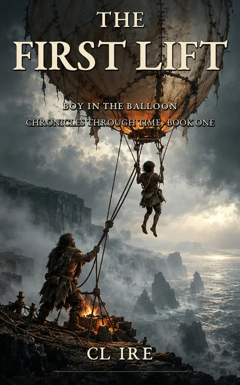

The First Lift
The Boy in the Balloon: Chronicles Through Time, Book 1
He was not cast out. He was simply no longer counted.
Kindle Unlimited reader? Membership eligibility for individual books is shown on Amazon. The format links above are paid affiliate links.
Purchase links open Amazon. Format availability is taken from the public catalog record.
What is on file
He was not cast out.
He was simply no longer counted.
When a circle stops making room quietly enough, there is no dramatic exile. No final argument. No sentence passed before the tribe.
There is only a boy standing in the wrong place, with nobody bothering to correct him.
So he walks toward the sea.
Read the complete filed description
Toward a thin column of smoke rising near the cliffs. Toward a strange old man who does not ask where he came from, what he has lost, or why he is alone.
Only what he notices.
The man is a Builder. And together, they begin constructing something the world has not yet agreed to permit.
A great pale skin stitched together by hand. A fire kept alive through careful calculation. A tangle of ropes and knots. A machine made from patience, hunger, and the stubborn suspicion that the sky might be persuaded to carry them.
The balloon wants to rise.
So does the boy.
But the peninsula is full of circles that fear anything refusing to remain where it belongs. And beneath the cliffs, something ancient is humming.
Not loudly. Not urgently.
Patiently.
As though it has been waiting for someone to notice.
As their first impossible flight draws nearer, the boy and the Builder discover that leaving the ground may be easier than escaping the stories people have already written about them.
And the oldest story of all may be buried beneath their feet.
The First Lift is Book One of Boy in the Balloon: Chronicles Through Time, a mythic speculative-fiction journey through forgotten engineering, ancient mysteries, lost histories, and the strange human talent for turning things we no longer understand into miracles.
Some things rise.
Some things wait to be found.
Some circles are not worth returning to.
Further material may surface.
No connected records are currently listed for this entry. Connections are added only when the archive can support them, and not merely because two stories share a city.
Request filing notices ↗